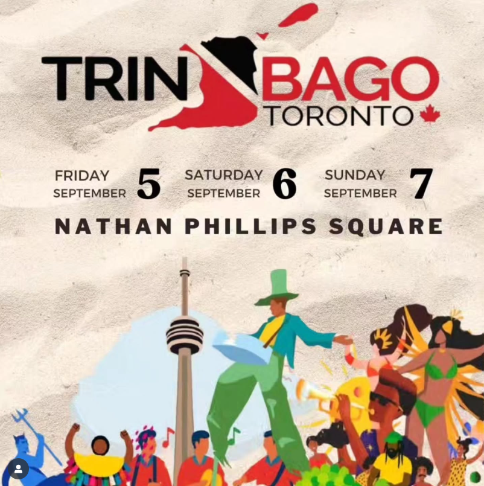

Trinidad and Tobago is a dual-island Caribbean nation near Venezuela, with distinctive Creole traditions and cuisines. Trinidad’s capital, Port of Spain, hosts a boisterous carnival featuring calypso and soca music. Numerous bird species inhabit sanctuaries such as the Asa Wright Nature Centre. The smaller island of Tobago is known for its beaches and the Tobago Main Ridge Forest Reserve, which shelters hummingbirds.
Check out the Trinbago Festival on September 5-7, 2025 at Nathan Phillip Square! So be sure to bring your friends, bring your family, and come vibe with us on September 5th, 6th, and 7th.💃🾠They have some amazing performances and surprises lined up, so stay tuned🎶🔥
